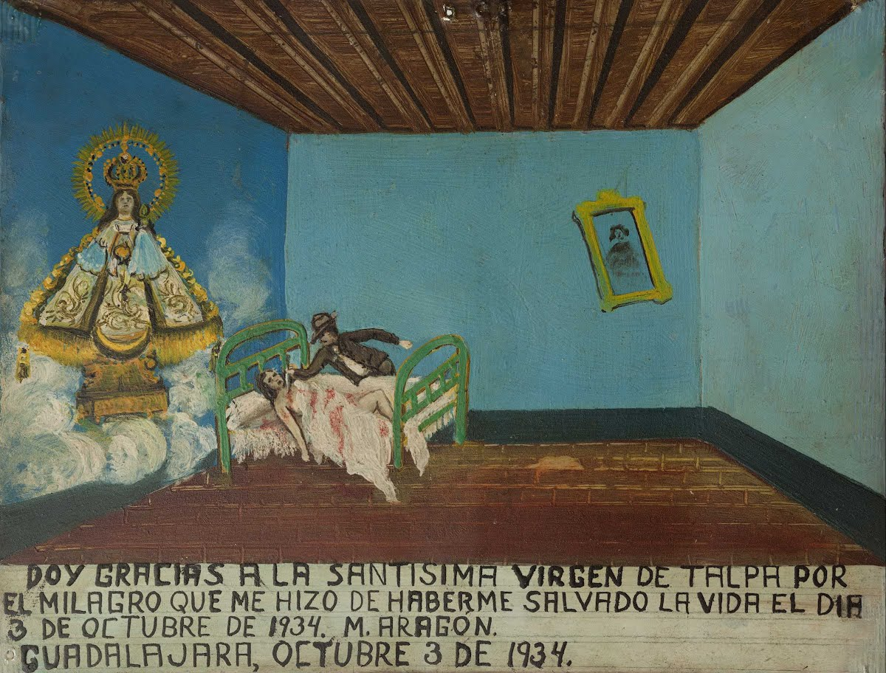

Exvotos
Series of Paintings By Frida Khalo
last
summer i visited La Casa Azul, the frida khalo museum located in Coyocan, Mexico City. the musuem had countless of
exvotos
which are paintings that serve as altar pieces, made to give thanks to the Virgin Mary and saints. i have an
obssession
with holy imagery and being mexican, honoring the Virgin Mary is embedded with my culture and how i grew up (even if i am not religious)
